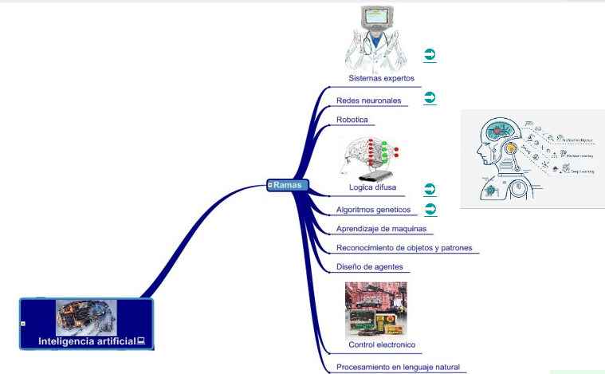

|

RAMAS DE LA IA
La inteligencia artificial (IA) es un campo amplio que abarca varias ramas y enfoques diferentes. Aquí encontraras hay algunas de las principales ramas de la inteligencia artificial:
1. Aprendizaje Automático (Machine Learning): Es una de las ramas más importantes de la IA, se centra en el desarrollo de algoritmos y técnicas que permiten a las computadoras aprender de datos y experiencias pasadas para realizar tareas específicas sin ser explícitamente programadas para cada una de ellas.
2. Redes Neuronales Artificiales: Inspiradas en la estructura y funcionamiento del cerebro humano, las redes neuronales artificiales son un enfoque específico dentro del aprendizaje automático que utiliza modelos matemáticos para procesar información y realizar tareas como clasificación, reconocimiento de patrones y predicción.
3. Procesamiento del Lenguaje Natural (NLP): Se ocupa de la interacción entre las computadoras y el lenguaje humano. Implica la comprensión y generación de texto en forma hablada o escrita, así como la traducción automática, el análisis de sentimientos y la extracción de información de texto.
4. Visión por Computadora: Se centra en el desarrollo de sistemas que pueden interpretar y comprender visualmente el mundo que les rodea a partir de imágenes o videos. Se aplica en reconocimiento facial, detección de objetos, seguimiento de movimiento y segmentación de imágenes, entre otros.
5. Robótica: La robótica combina la inteligencia artificial con la ingeniería para diseñar, construir y programar robots capaces de realizar tareas autónomamente en entornos variables y complejos. Incluye áreas como la percepción del entorno, la planificación de movimientos y la interacción humano-robot.
6. Agentes Inteligentes: Son sistemas de IA diseñados para actuar de manera autónoma en un entorno para alcanzar ciertos objetivos. Pueden ser simples o complejos y se utilizan en aplicaciones como juegos, simulaciones, sistemas de control y asistentes virtuales.
7. Sistemas Expertos: Son programas de computadora que emulan el conocimiento y la capacidad de toma de decisiones de un experto humano en un dominio específico. Utilizan reglas de inferencia y bases de conocimiento para resolver problemas complejos y brindar asesoramiento experto.
8. Algoritmos Evolutivos: Se basan en conceptos inspirados en la evolución biológica para resolver problemas de optimización y diseño. Utilizan procesos como la selección natural y la reproducción para generar soluciones cada vez mejores a lo largo de generaciones.
9. Lógica Difusa (Fuzzy Logic): Proporciona un marco para modelar y razonar con información imprecisa o incierta. Se utiliza en sistemas de control, toma de decisiones y reconocimiento de patrones donde las situaciones pueden ser ambiguas o poco claras.
10. Planificación y Razonamiento: Se centra en el desarrollo de algoritmos y técnicas que permiten a las computadoras planificar secuencias de acciones y razonar sobre problemas complejos para tomar decisiones óptimas..
|